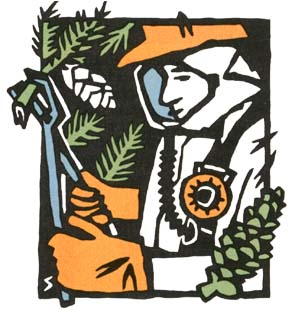

SEASONS OF THE GARDEN
YOU WON'T FIND WARNING LABELS on purchased trees and shrubs, but perhaps you should. The once-rare fungal infection called sporotrichosis has become a major concern to the nursery industry. Last year there were outbreaks of this potentially serious disease in 14 states.
The fungus that causes sporotrichosis can contaminate sphagnum moss and then enter the victim's bloodstream via small puncture wounds. Handling sharp-needled conifers is thus riskier than handling deciduous plants; still, you should wear gloves to protect against wounds when working with any plants packed in sphagnum moss.
Symptoms typically begin a week or two after infection, with red lesions on the skin of hands and arms. More lesions follow, and these can have discharges or can ulcerate. Sometimes there are severe complications. Treatment is simple-oral dosages of potassium iodide; unfortunately, many physicians do not diagnose sporotrichosis accurately. If you have been planting trees or shrubs (especially prickly ones) and have skin lesions that don't heal within a month, see your doctor and suggest the possibility of this tree planter's disease.
Stopping apple scab.
An Indian horticulturist reports that spraying a 5% solution of urea, a soluble nitrogen fertilizer, on apple trees late in the growing season (but before leaf fall) can result in scab control comparable to that achieved by using fungicides. Synthetic urea, made from petroleum, is chemically identical to the urea in the animal urine, so homemade manure tea may make a good (and non-oil-based) substitute.
Stopping strawberry mold.
Canadian researchers have found that clipping and removing strawberry foliage can significantly reduce gray mold, Botrytis cinerea, the following year (the mold overwinters on dead leaves). It's probably best to clip leaves late in the fall so the root systems will have time to store abundant food reserves.
Metered melons. USDA scientists have invented a device to measure the sweetness of melons without cutting them open. The machine measures how much near-infrared light the fruit absorbs-the more, the sweeter.
Stimulating sludge. Because municipal sludge can be high in heavy metals and other hazardous substances, most gardeners won't risk applying it heavily to food crops. Now, however, Arizona University researchers have discovered that some sludge contains plant growth stimulators (similar to natural cytokinins) that are effective at very low application rates. No one knows how they end up in sludge.
The 366-page Fruit, Berry, and Nut Inventory ($19 postpaid from the Seed Savers Exchange, R.R. 3, Box 239, Decorah, IA 52101) describes over 4,000 cultivars currently available from 248 mail-order nurseries in the U.S. . . . Planning to try market gardening? Backyard Cash Crops ($16.95 postpaid from Homestead Design, Inc., P.O. Box 988, Friday Harbor, WA 98250) is full of ideas on growing and selling many kinds of specialty crops .... An excellent introduction to hobby greenhouses is given in Greenhouses & Garden Rooms ($5.75 postpaid from the Brooklyn Botanic Garden, 1000 Washington Ave., Brooklyn, NY 11225) . . . . Deluxe fruit-picking baskets are available from Friend Manufacturing Corporation, P.O. Box A, Gasport, NY 14067 (write for a price list).
Greg and Pat Williams raise most of their food on a small farm and publish Hort-Ideas, a fine newsletter on gardening research and products ($15 a year from G.& P. Williams, Rte. 1, Box 302, Gravel Switch, KY 40328).
|
 |
|
|